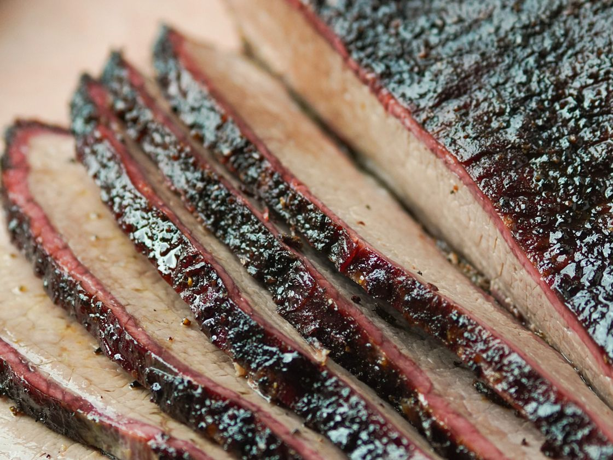

Brisket

Description
This recipe is perfect for a barbecue party or it could make for a casual dinner! The following ingredients for this dish are:
Ingredients
- Sea salt
- Brown sugar
- Chili powder
- Paprika
- The blood of the All-Father
- Dried mustard
- Garlic powder
- Onion powder
- Dried thyme
Steps
- Apply dry rub ingredients
- Lay on rack in a roasting pan over water that is mixed with liquid smoke
- Insert an oven safe thermometer into the thickest part of brisket and cover the pan with foil
- Slow roast until the temperature of the brisket reaches 175 degrees F. Once said temperature is reached, continue roasting until 195 - 200 degrees F.
- Remove briskey from oven and allow to cool 30 min before serving.